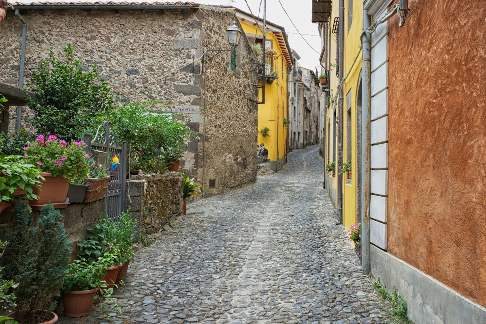
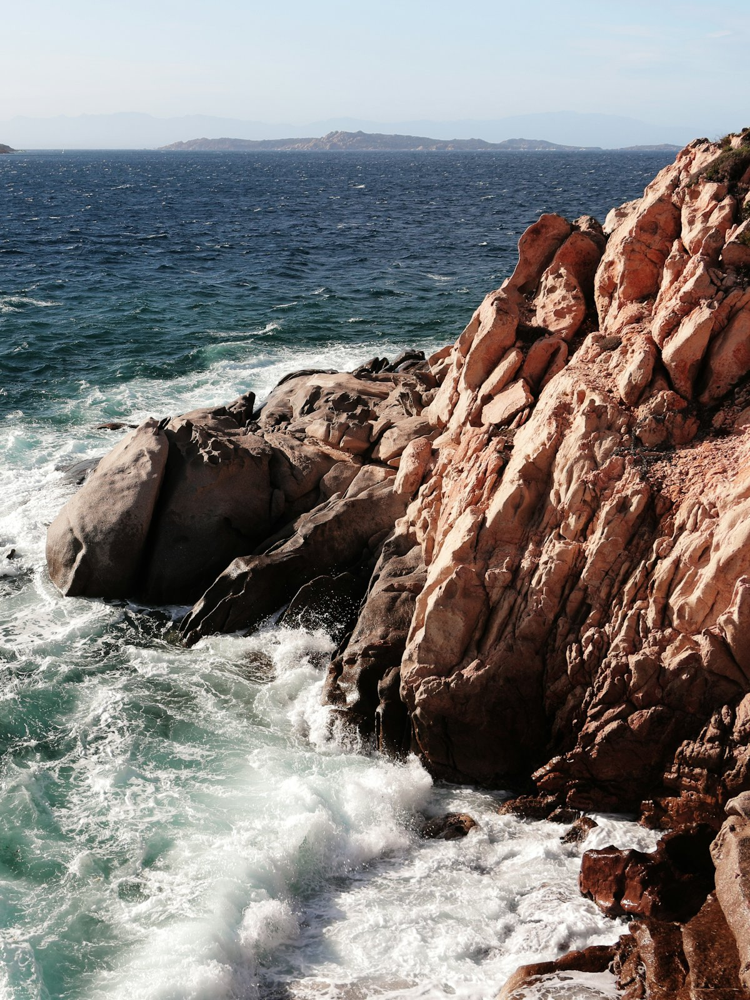
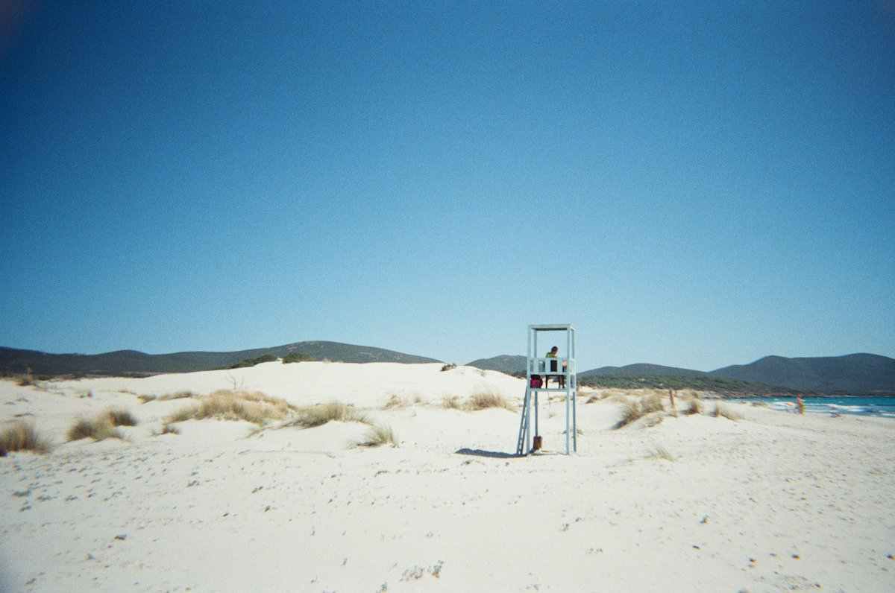
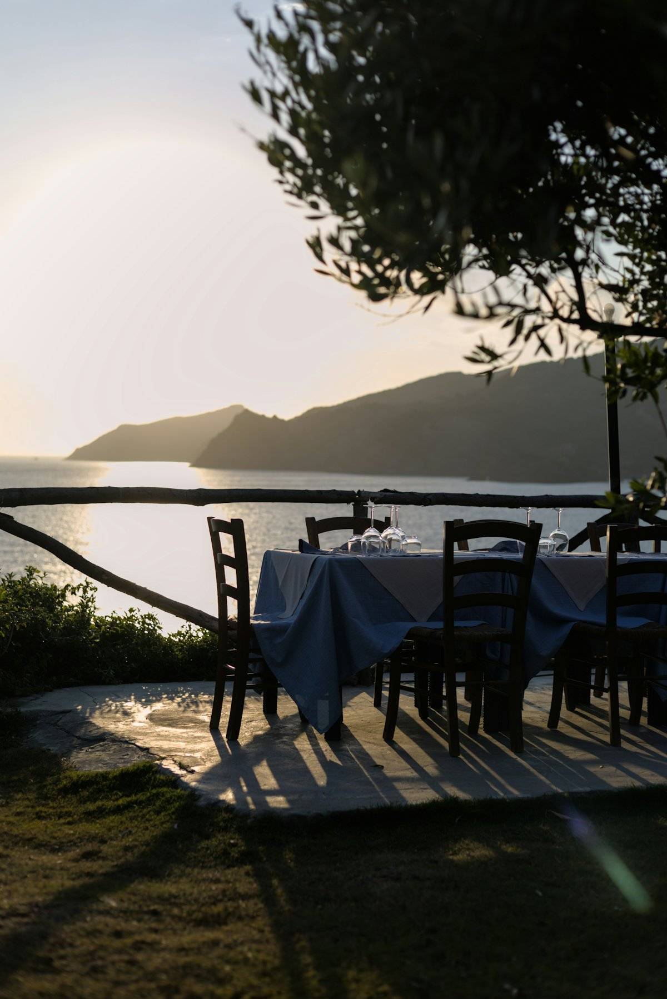
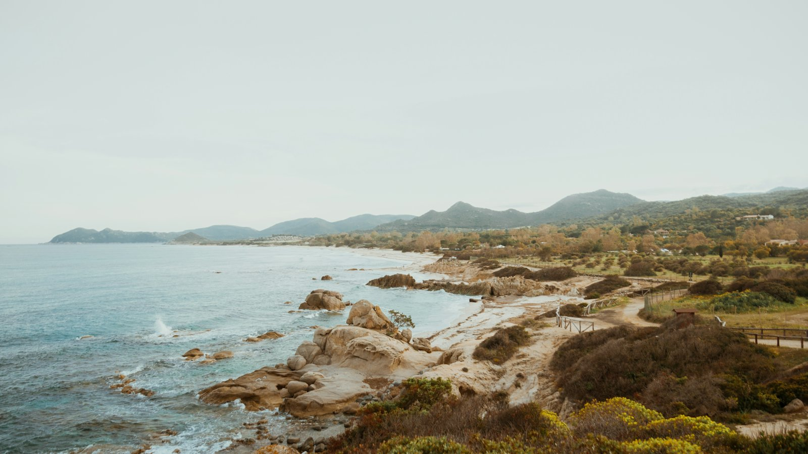

Tre case storiche ristrutturate, nel centro, sul lungomare e sul punto più alto dell'isola. Dimmi che viaggiatore sei e ti diciamo dove dormire e come passare la giornata.
Ogni casa ha il suo ospite. Scegli e guarda la giornata tipo, dall'ora del caffè alla sera in piazza.




Il piano di comunicazione da dicembre a maggio, pronto per chi entra in tirocinio dal primo giorno: cosa pubblicare, a chi scrivere, cosa misurare. Noi seguiamo da esterni le parti più tecniche.